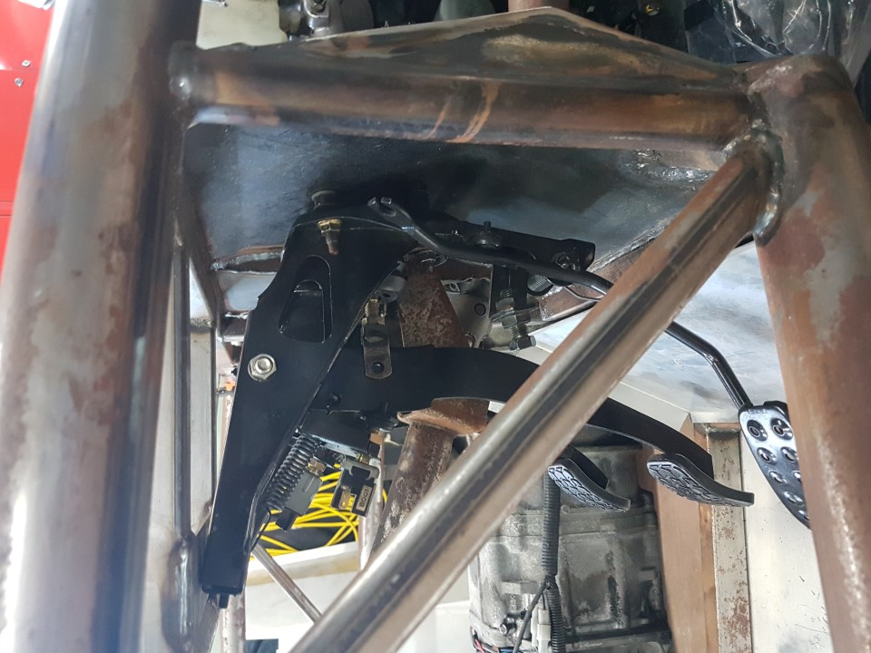

Pedal Box & steering
- On the back of the throttle/brake pedal box there are 4 spacers. These need to be cut so that the pedal box fit snugly against the firewall and the flat bar in the chassis above.
- Bolt the pedals in, brake reservoir has studs that the pedal box bolts to, note the gap so you can cut the spacers to make it fit correctly.
- Although it varies a bit, generally cut half the top spacer off on a angle and add this to the bottom, from here you can tweak the spacers with the grinder or add some washers.
- Ensure the brake bias device and bracket have been removed, theres not enough clearance between this and the inlet.
- Knock out the studs on the clutch pedal box & cut off the spacers that use to go through the firewall. Grind flat.
- Use one of the longer studs to replace the shorter one the steering column fits to.
- Install a spacer you cut off (step 4) over the stud you just fitted.
- You may have to enlarge the hole on the chassis for the master cylinder (<1mm), their size changed a bit on some models.
- Bolt the clutch pedal in place utilising the master cylinder and 4x M8x40s with Nylocs and washers
- The steering shaft goes through the larger hole nearer the trans tunnel, this should fit over a stud on the clutch pedal and one on the brake pedal box.
- Using the steering top mount plate attach the top end of the steering wheel using M8x35 nylocs and washers. Note there is a high and low option here, we recommend the higher option for the preinstall, it holds things tighter together.
- Check all these bolts are tight and everything is sitting nicely with all pedals having full movement.
- Mark the plate above the pedals where the M10x25 bolts with nylocs and washers can go through.
- Punch & drill holes for top of pedal boxes.
